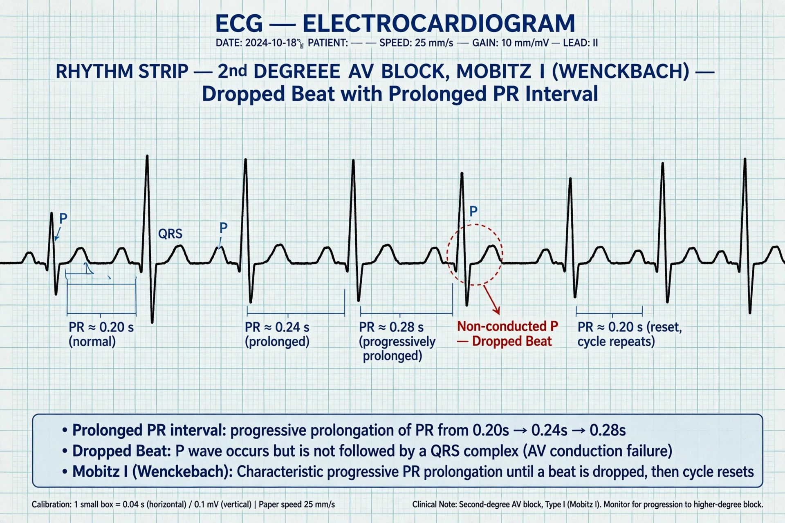

Atrioventricular block
| Atrioventricular block | |
|---|---|
| Specialty | Cardiology |
| Types | First-degree, second-degree (Mobitz I and II), third-degree (complete) |
| Symptoms | Often none; fatigue, dizziness, fainting in higher degrees |
| Causes | Fibrosis of the conduction system, ischaemic heart disease, medications (beta blockers, calcium channel blockers), Lyme disease, congenital |
| Treatment | Observation; pacemaker for symptomatic higher-degree block |

Atrioventricular block (AV block) is a type of heart block that occurs when the electrical signal travelling from the atria to the ventricles of the heart is impaired. Normally, the sinoatrial node produces an electrical signal to control the heart rate, which travels through the atrioventricular node (AV node) before spreading to the ventricles. In AV block, this message is delayed or blocked.
Types
First-degree
Every atrial impulse is conducted, but slowly: the PR interval on the ECG is prolonged beyond 200 ms. It rarely causes symptoms.
Second-degree
Some impulses fail to reach the ventricles. In Mobitz type I (Wenckebach), the PR interval lengthens progressively until a beat is dropped. In Mobitz type II, beats are dropped suddenly without prior lengthening, and the block usually lies below the AV node, carrying a higher risk of progression.
Third-degree (complete)
No atrial impulses reach the ventricles; atria and ventricles beat independently, the ventricles maintained by a slow escape rhythm. Complete heart block can cause fainting (Stokes–Adams attacks) and generally requires a permanent pacemaker.
Causes and treatment
Causes include age-related fibrosis of the conduction system (Lenègre's disease), myocardial infarction, cardiomyopathy, medication effects, increased vagal tone, and infections such as Lyme disease. Asymptomatic first-degree and Mobitz I block often need no treatment; symptomatic or high-grade block is treated with an artificial pacemaker.
See also: Heart block · Electrocardiography · Artificial cardiac pacemaker